공인중개사-1차 (2017-10-28 기출문제)
1과목: 부동산학개론
1. 이용상태에 따른 토지용어의 설명으로 틀린 것은?
- 부지(敷地)는 도로부지, 하천부지와 같이 일정한 용도로 이용되는 토지를 말한다.
- 선하지(線下地)는 고압선 아래의 토지로 이용 및 거래의 제한을 받는 경우가 많다.
- 맹지(盲地)는 도로에 직접 연결되지 않은 한 필지의 토지다.
- 후보지(候補地)는 임지지역, 농지지역, 택지지역 상호간에 다른 지역으로 전환되고 있는 어느 지역의 토지를 말한다.
- 빈지(濱地)는 물에 의한 침식으로 인해 수면 아래로 잠기거나 하천으로 변한 토지를 말한다.
(정답률: 66%)

2. 부동산개발의 위험에 관한 설명으로 틀린 것은?
- 워포드(L. Wofford)는 부동산개발위험을 법률위험, 시장위험, 비용위험으로 구분하고 있다.
- 부동산개발사업의 추진에는 많은 시간이 소요되므로, 개발 사업기간 동안 다양한 시장위험에 노출된다.
- 부동산개발사업의 진행과정에서 행정의 변화에 의한 사업 인ㆍ허가 지연위험은 시행사 또는 시공사가 스스로 관리할 수 있는 위험에 해당한다.
- 법률위험을 최소화하기 위해서는 이용계획이 확정된 토지를 구입하는 것이 유리하다.
- 예측하기 어려운 시장의 불확실성은 부동산 개발사업에 영향을 주는 시장위험요인이 된다.
(정답률: 66%)
3. 토지의 자연적 특성으로 인해 발생되는 부동산 활동과 현상에 관한 설명으로 틀린 것은?
- 토지의 부증성은 지대 또는 지가를 발생시키며, 최유효 이용의 근거가 된다.
- 토지의 개별성은 부동산활동과 현상을 개별화시킨다.
- 토지의 부동성은 지방자치단체 운영을 위한 부동산조세수입의 근거가 될 수 있다.
- 토지의 영속성은 미래의 수익을 가정하고 가치를 평가하는 직접환원법의 적용을 가능하게 한다.
- 토지의 부증성으로 인해 이용전환을 통한 토지의 용도적 공급을 더 이상 늘릴 수 없다.
(정답률: 60%)
4. 한국표준산업분류상 부동산 관리업의 분류체계 또는 세부 예시에 해당하지 않는 것은?
- 주거용 부동산 관리
- 비주거용 부동산 관리
- 사무용 건물 관리
- 사업시설 유지ㆍ관리
- 아파트 관리
(정답률: 53%)
5. 부동산마케팅전략에 관한 설명으로 틀린 것은?
- 부동산마케팅에서 시장세분화(market segmentation)란 부동산시장에서 마케팅활동을 수행하기 위하여 구매자의 집단을 세분하는 것이다.
- 부동산 마케팅에서 표적시장(target market)이란 세분된 시장 중에서 부동산기업이 표적으로 삼아 마케팅활동을 수행하는 시장을 말한다.
- 마케팅믹스(marketing mix)는 마케팅 목표의 효과적인 달성을 위하여 이용하는 마케팅 구성요소인 4P(Place, Product, Price, Promotion)의 조합을 말한다.
- 판매촉진(Promotion)은 표적시장의 반응을 빠르고 강하게 자극ㆍ유인하기 위한 전략을 말한다.
- 부동산마케팅의 가격전략 중 빠른 자금회수를 원하고 지역구매자의 구매력이 낮은 경우, 고가전략을 이용한다.
(정답률: 65%)
6. 다음 법률적 요건을 모두 갖춘 주택은?
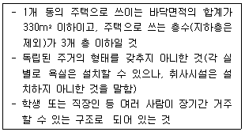
- 연립주택
- 다중주택
- 다가구주택
- 다세대주택
- 기숙사
(정답률: 57%)
7. 부동산시장에 관한 설명으로 틀린 것은? (단, 다른 조건은 동일함)
- 준강성 효율적 시장은 공표된 것이건 그렇지 않은 것이건 어떠한 정보도 이미 가치에 반영되어 있는 시장이다.
- 부동산시장에서 정보의 비대칭성은 가격형성의 왜곡을 초래할 수 있다.
- 부동산시장에서 기술의 개발로 부동산 공급이 증가하는 경우, 수요의 가격탄력성이 작을수록 균형가격의 하락폭은 커진다.
- 일반적으로 부동산은 일반재화에 비해 거래비용이 많이 들고, 부동산이용의 비가역적 특성 때문에 일반재화에 비해 의사결정 지원분야의 역할이 더욱 중요하다.
- 부동산은 다양한 공ㆍ사적 제한이 존재하며, 이는 부동산가격 변동에 영향을 미칠 수 있다.
(정답률: 51%)
8. 부동산정책에 관한 설명으로 옳은 것을 모두 고른 것은?
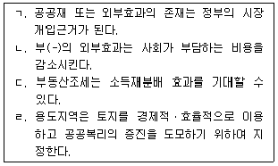
- ㄱ, ㄴ
- ㄱ, ㄷ
- ㄱ, ㄹ
- ㄱ, ㄷ, ㄹ
- ㄴ, ㄷ, ㄹ
(정답률: 58%)
9. 임대주택정책에 관한 설명으로 틀린 것은? (단, 다른 조건은 동일함)
- 임대료 보조정책은 저소득층의 실질소득 향상에 기여할 수 있다.
- 임대료 상한을 균형가격 이하로 규제하면 임대주택의 공급과잉현상을 초래한다.
- 임대료 보조정책은 장기적으로 임대주택의 공급을 증가 시킬 수 있다.
- 정부의 규제임대료가 균형임대료보다 낮아야 저소득층의 주거비 부담 완화효과를 기대할 수 있다.
- 임대료 규제란 주택 임대인이 일전수준 이상의 임대료를 임차인에게 부담시킬 수 없도록 하는 제도다.
(정답률: 63%)
10. 토지비축제도에 관한 설명으로 틀린 것은?
- 토지비축제도는 정부가 직접적으로 부동산시장에 개입하는 정책수단이다.
- 토지 비축제도의 필요성은 토지의 공적 기능이 확대됨에 따라 커질 수 있다.
- 토지비축사업은 토지를 사전에 비축하여 장래 공익사업의 원활한 시행과 토지시장의 안정에 기여할 수 있다.
- 토지비축제도는 사적 토지소유의 편중현상으로 인해 발생 가능한 토지보상비 등의 고비용 문제를 완화시킬 수 있다.
- 공공토지의 비축에 관한 법령상 비축 토지는 각 지방자치단체에서 직접 관리하기 때문에 관리의 효율성을 기대할 수 있다.
(정답률: 54%)
11. A씨는 주택을 구입하기 위해 은행으로부터 5억원을 대출받았다. 은행의 대출조건이 다음과 같을 때, 9회차에 상환할 원리금상환액과 13회차에 납부하는 이자납부액을 순서대로 나열한 것은? (단, 주어진 조건에 한함)
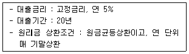
- 4,000만원, 1,000만원
- 4,000만원, 1,100만원
- 4,500만원, 1,000만원
- 4,500만원, 1,100만원
- 5,000만원, 1,100만원
(정답률: 41%)
12. 부동산조세에 관한 설명으로 옳은 것은? (단, 우하향하는 수요곡선을 가정함)
- 소유자가 거주하는 주택에 재산세를 부과하면, 주택수요가 증가하고 주택가격은 상승하게 된다.
- 임대주택에 재산세를 부과하면 임대주택의 공급이 증가하고 임대료는 하락할 것이다.
- 주택의 취득세율을 낮추면, 주택의 수요가 감소한다.
- 주택공급의 동결효과(lock-in effecf)란 가격이 오른 주택의 소유자가 양도소득세를 납부하기 위해 주택의 처분을 적극적으로 추진함으로써 주택의 공급이 증가하는 효과를 말한다.
- 토지공급의 가격탄력성이 ‘0’인 경우, 부동산조세 부과시 토지소유자가 전부 부담하게 된다.
(정답률: 56%)
13. 허프(D. Huff)모형을 활용하여, X지역의 주민이 할인점 A를 방문할 확률과 할인점 A의 원 추정매출액을 순서대로 나열한 것은? (단, 주어진 조건에 한함)
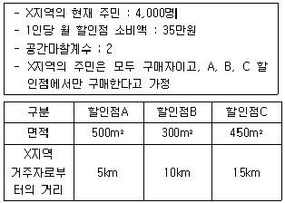
- 80%, 10억 9,200만원
- 80%, 11억 2,000만원
- 82%, 11억 4,800만원
- 82%, 11억 7,600만원
- 82%, 12억 400만원
(정답률: 46%)
14. 지대이론에 관한 설명으로 옳은 것을 모두 고른 것은?
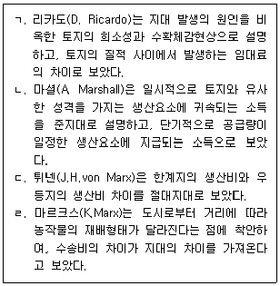
- ㄱ, ㄴ
- ㄴ, ㄷ
- ㄱ, ㄴ, ㄹ
- ㄱ, ㄷ, ㄹ
- ㄴ, ㄷ, ㄹ
(정답률: 45%)
15. 투자타당성분석에 관한 설명으로 옳은 것은?
- 내부수익률은 순현가를 ‘0’보다 작게 하는 할인율이다.
- 수익성지수는 순현금 투자지출 합계의 현재가치를 사업기간중의 현급수입 합계의 현재가치로 나눈 상대지수이다.
- 순현가는 현금유입의 현재가치에서 현금유출의 현재가치를 뺀 값이다.
- 회수기간은 투자시점에서 발생한 비용을 회수하는 데 걸리는 기간을 말하며, 회수기간법에서는 투자안 중에서 회수기간이 가장 장기인 투자안을 선택했다.
- 순현가법과 내부수익률법에서는 투자판단기준을 위한 할인율로써 요구수익률을 사용한다.
(정답률: 49%)
16. 부동산 운영수지분석에 관한 설명으로 틀린 것은?
- 가능총소득은 단위면적당 추정 임대료에 임대면적을 곱하여 구한 소득이다.
- 유효총소득은 가능총소득에서 공실손실상당액과 불량부체액(충당금)을 차감하고, 기타 수입을 더하여 구한 소득이다.
- 순영업소득은 유효총소득에 각종 영업외수입을 더한 소득으로 부동산 운영을 통해 순수하게 귀속되는 영업소득이다.
- 세전현금흐름은 순영업소득에서 부채서비스액을 차감한 소득이다.
- 세후현금흐름은 세전현금흐름에서 영업소득세를 차감한 소득이다.
(정답률: 49%)
17. 도시공간구조이론에 관한 설명으로 옳은 것은?
- 도시공간구조의 변화를 야기하는 요인은 교통의 발달이지 소득의 증가와는 관계가 없다.
- 버제스(E. Burgess)는 도시의 성장과 분화가 주요 교통망에 따라 확대되면서 나타난다고 보았다.
- 호이트(H. Hoyt)는 도시의 공간구조형성을 침입, 경쟁, 천이 등의 과정으로 나타난다고 보았다.
- 동심원이론에 의하면 점이지대는 고급주택지구보다 도심으로부터 원거리에 위치한다.
- 다핵심이론의 핵심요소에는 공업, 소매, 고급주택 등이 있으며, 도시성장에 맞춰 핵심의 수가 증가하고 특화될 수 있다.
(정답률: 46%)
18. 다음 아파트에 대한 다세대주택 수요의 교차탄력성은? (단, 주어진 조건에 한함)
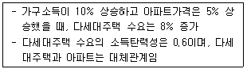
- 0.1
- 0.2
- 0.3
- 0.4
- 0.5
(정답률: 35%)
19. 수요의 가격탄력성에 관한 설명으로 옳은 것은? (단, 수요의 가격탄력성은 절대값을 의미하며, 다른 조건은 동일함)
- 수요의 가격탄력성이 1보다 작을 경우 전체 수입은 임대료가 상승함에 따라 감소한다.
- 대체재가 있는 경우 수요의 가격탄력성은 대체재가 없는 경우보다 비탄력적이다 된다.
- 우하향하는 선분으로 주어진 수요곡선의 경우, 수요곡선상의 측정지점에 따라 가격탄력성은 다르다.
- 일반적으로 부동산 수요의 가격탄력성은 단기에서 장기로 갈수록 더 비탄력적이 된다.
- 부동산의 용도전환이 용이할수록 수요의 가격탄력성은 작아진다.
(정답률: 40%)
20. 부동산의 수요 및 공급에 관한 설명으로 틀린 것은? (단, 다른 조건은 동일함)
- 수요곡선이 변하지 않을 때, 세금부과에 의한 경제적 순손실은 공급이 비탄력적일수록 커진다.
- 부동산수요가 증가하면, 부동산공급이 비탄력적일수록 시장균형가격이 더 크게 상승한다.
- 용도변경을 제한하는 법규가 강화될수록, 공급은 이전에 비해 비탄력적이다 된다.
- 수요와 공급이 모두 증가하는 경우, 균형가격의 상승여부는 수요와 공급의 증가폭에 의해 결정되고 균형량은 증가한다.
- 부동산수요곡선상 수요량은 주어진 가격수준에서 부동산 구매 의사와 구매 능력이 있는 수요자가 구매하고자 하는 수량이다.
(정답률: 38%)
21. 주택 공급 변화요인과 공급량 변화요인이 옳게 묶인 것은?
- 공급변화요인 : 주택건설업체수의 증가, 공급량 변화요인 : 주택가격 상승
- 공급변화요인 : 정부의 정책, 공급량 변화요인 : 건설기술개발에 따른 원가정감
- 공급변화요인 : 건축비의 하락, 공급량 변화요인 : 주택건설용 토지가격의 하락
- 공급변화요인 : 노동자 임금 하락, 공급량 변화요인 : 담보대출이자율의 상승
- 공급변화요인 : 주택경기 전망, 공급량 변화요인 : 토지이용규제 완화
(정답률: 46%)
22. 주택도시기금법령상 주택도시기금 중 주택계정의 용도가 아닌 것은?
- 국민주택의 건설에 대한 융자
- 준주택의 건설에 대한 융자
- 준주택의 구입에 대한 융자
- 국민주택규모 이상인 주택의 리모델링에 대한 융자
- 국민주택을 건설하기 위한 대지조성사업에 대한 융자
(정답률: 53%)
23. 다음 조건에서 A지역 아파트시장이 t시점에서 (t+1)시점으로 변화될 때, 균형가격과 균형량의 변화는? (단, 주어진 조건에 한하며, P는 가격 Qs는 공급량이며 Qd1과 Qd2는 수요량임)
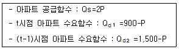
- 균형가격 : 200 상승, 균형량 : 400 감소
- 균형가격 : 200 상승, 균형량 : 400 증가
- 균형가격 : 200 하락, 균형량 : 400 감소
- 균형가격 : 200 하락, 균형량 : 400 증가
- 균형가격 : 100 상승, 균형량 : 200 증가
(정답률: 49%)
24. 다음에서 설명하는 사회기반시설에 대한 민간투자방식을 ＜보기＞에서 올바르게 고른 것은?
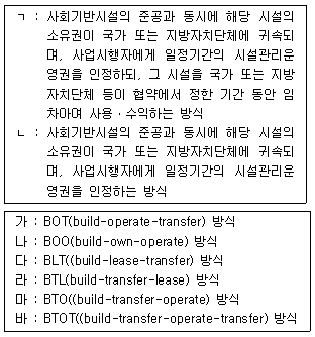
- ㄱ : 가, ㄴ : 나
- ㄱ : 나, ㄴ : 다
- ㄱ : 다, ㄴ : 라
- ㄱ : 라, ㄴ : 마
- ㄱ : 마, ㄴ : 바
(정답률: 54%)
25. 부동산금융에 관한 설명으로 틀린 것은?
- 부동산투자회사(REITs)와 조인트벤처(joint venture)는 자금조달방법 중 지분 금융에 해당한다.
- 원리금균등상환방식에서는 상환초기보다 후기로 갈수록 매기상환액 중 원금상환액이 커진다.
- 주택담보노후연금은 연금개시 시점에 주택소유권이 연금지급기관으로 이전된다.
- 주택저당담보부채권(MBB)은 주택저당대출차입자의 채무불이행이 발생하더라도 MBB에 대한 원리금을 발행자가 투자자에게 지급하여야 한다.
- 다충저당증권(CMO)의 발행자는 동인한 저당품(mortgagepool)에서 상환우선순위와 만기가 다른 다양한 저당담조부증권(MBS)을 발행할 수 있다.
(정답률: 44%)
26. 토지정책에 관한 설명으로 옳은 것은?
- 토지정책수단 중 도시개발사업, 토지수용, 금융지원, 보조금 지급은 직접개입방식이다.
- 개방권양도제는 개발사업의 시행으로 이익을 얻은 사업시행자로부터 불로소득적 증가분의 일정액을 환수하는 제도다.
- 토지선매란 토지거래허가구역내에서 토지거래계약의 허가신청이 있을 때 공익목적을 위하여 사적 거래에 우선하여 국가ㆍ지방자치단체ㆍ한국토지주택공사 등이 그 토지를 매수할 수 있는 제도다
- 토지정성평가제는 미개발 토지를 토지이용계획에 따라 구획정리하고 기반시설을 갖춤으로써 이용가치가 높은 토지로 전환시키는 제도다.
- 토지거래허가제는 토지에 대한 개발과 보전의 문제가 발생했을 때 이를 합리적으로 조정하는 제도다.
(정답률: 46%)
27. A씨는 이미 은행에서 부동산을 담보로 7,000만원을 대출받은 상태이다. A씨가 은행으로부터 추가로 받을 수 있는 최대 담보대출금액은? (단, 주어진 조건에 한함)
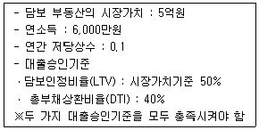
- 1억 5,000만원
- 1억 7,000만원
- 1억 8,000만원
- 2억 4,000만원
- 2억 5,000만원
(정답률: 42%)
28. 부채감당률(dedt coverage ratio)에 관한 설명으로 틀린 것은?
- 부채감당률이란 순영업소득이 부채서비스액의 몇 배가 되는가를 나타내는 비율이다.
- 부채서비스액은 매월 또는 매년 지불하는 이자지급액을 제외한 원금상환액을 말한다.
- 부채감당률이 2, 대부비율이 50%, 연간 저당상수가 0.1이라면 (종합)자본환원율은 10%이다.
- 부채감당률이 1보다 작다는 것은 순영업소득이 부채서비스액을 감당하기에 부족하다는 것이다.
- 대출기관이 채무불이행 위험을 낮추기 위해서는 해당 대출조건의 부채감당률을 높이는 것이 유리하다.
(정답률: 43%)
29. 다음 부동산 투자안에 관한 단순회수기간법의 회수 기간은? (단, 주어진 조건에 한함)
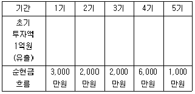
- 2년 6개월
- 3년
- 3년 6개월
- 4년
- 4년 6개월
(정답률: 47%)
30. 부동산투자의 위험분석에 관한 설명으로 틀린 것은? (단, 위험회피형 투자자라고 가정함)
- 부동산투자에서 일반적으로 위험과 수익은 비례관계에 있다.
- 평균분산결정법은 기대수익률의 평균과 분산을 이용하여 투자대안을 선택하는 방법이다.
- 보수적 예측방법은 투자수익의 추계치를 하향 조정함으로써, 미래에 발생할 수 있는 위험을 상당수 제거할 수 있다는 가정에 근거를 두고 있다.
- 위험조정할인율을 적용하는 방법으로 장래 기대되는 소득을 현재가치로 환산하는 경우, 위험한 투자일수록 낮은 할인율을 적용한다.
- 민감도분석은 투자효과를 분석하는 모형의 투입요소가 변화함에 따라, 그 결과치에 어떠한 영향을 주는가를 분석하는 기법이다.
(정답률: 52%)
31. 부동산 투자분석기법 중 비율분석법에 관한 설명으로 틀린 것은?
- 채무불이행률은 유효총소득이 영업경비와 부채서비스액을 감당할 수 있는 능력이 있는지를 측정하는 비율이며, 채무불이행률을 손익분기율이라고도 한다.
- 대부비율은 부동산가치에 대한 융자액의 비율을 가리키며, 대부비율을 저당비율이라고도 한다.
- 부채비율은 부채에 대한 지분의 비율이며, 대부비율이 50%일 경우에는 부채비율은 100%가 된다.
- 총자산회전율은 투자된 총자산에 대한 총소득의 비율이며, 총소득으로 가능총소득 또는 유효총소득이 사용된다.
- 비율분석법의 한계로는 요소들에 대한 추계산정의 오류가 발생하는 경우에 비율 자체가 왜곡될 수 있다는 점을 들 수 있다.
(정답률: 33%)
32. 5년 후 1억원의 현재가치는? (단, 주어진 조건에 한함)
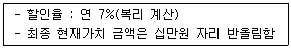
- 6,600만원
- 6,600만원
- 7,100만원
- 7,600만원
- 8,100만원
(정답률: 40%)
33. 부동산투자분석기번 중 할인현금흐름분석법(didcounted cash fiow analysis)에 관한 설명으로 틀린 것은?
- 장래 예상되는 현금수입과 지출을 현재가치로 할인하여 분석하는 방법이다.
- 장래 현금흐름의 예측은 대상부동산의 과거 및 현재자료와 비교부동산의 시장자료를 토대로, 여러 가지 미래 예측기법을 사용해서 이루어진다.
- 현금흐름의 추계에서는 부동산 운영으로 인한 영업소득뿐만 아니라 처분시의 지분복귀액도 포함된다.
- 순현가법, 내부수익률법 및 수익성지수법 등은 현금흐름을 할인하여 투자분석을 하는 방법이다.
- 할인현금흐름분석법에서 사용하는 요구수익률에는 세후 수익률, (종합)자본환원율 및 지분배당률 등이 있다.
(정답률: 36%)
34. 다음 ( )에 들어갈 숫자를 순서대로 나열한 것은? (단, 주어진 조건에 한함)
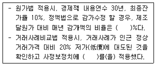
- 3, 0.80
- 3, 1.25
- 3.33, 0.80
- 3.33, 1.20
- 3.33, 1.25
(정답률: 32%)
35. 부동산 가격공시에 관한 설명으로 틀린 것은?
- 표준지의 도로상황은 표준지공시지가의 공시사항에 포함될 항목이다.
- 표준지공시지가에 대한 아의신청의 내용이 타당하다고 인정될 때에는 해당 표준지공시지가를 조정하여 다시 공시하여야 한다.
- 시장ㆍ군수 또는 구청장(자치구의 구청장을 말함)은 표준지로 선정된 토지에 대해서는 개별공시지가를 결정ㆍ공시하지 아니할 수 있다.
- 표준주택을 선정할 때에는 일반적으로 유사하다고 인정되는 일단의 단독주택 및 공동주택에서 해당 일단의 주택을 대표할 수 있는 주택을 선정하여야 한다.
- 시장ㆍ군수 또는 구청장(자치구의 구청장을 말함)이 개별주택가격을 결정ㆍ공시하는 경우에는 해당 주택과 유사한 이용가치를 지닌다고 인정되는 표준주택가격을 기준으로 주택가격비준표를 사용하여 가격을 산정하되, 해당 주택의 가격과 표준주택가격이 균형을 유지하도록 하여야 한다.
(정답률: 38%)
36. 다음 부동산현상 및 부동산 활동을 설명하는 감정평가이론상 부동산가격원칙을 순서대로 나열한 것은?
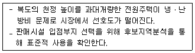
- 균형의 원칙, 적합의 원칙
- 예측의 원칙, 수익배분의 원칙
- 적합의 원칙, 예측의 원칙
- 수익배분의 원칙, 균형의 원칙
- 적합의 원칙, 변동의 원칙
(정답률: 47%)
37. 다음 자료를 활용하여 수익환원법을 적용한 평가대상 근린생활시설의 수익가액은? (단, 주어진 조건에 한하며 연간 기준임)
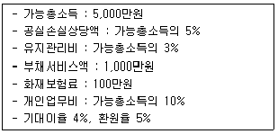
- 6억원
- 7억 2,000만원
- 8억 2,000만원
- 9억원
- 11억 2,500만원
(정답률: 23%)
38. 감정평가에 관한 규칙상 평가대상의 주된 감정평가 방법으로 틀린 것은?
- 건설기계 - 거래사례비교법
- 저작권 - 수익환원법
- 건물 - 원가법
- 임대료 - 임대사례비교법
- 광업재단 - 수익환원법
(정답률: 45%)
39. 감정평가에 관한 규칙상 용어 정의로 틀린 것은?
- 시장가치는 감정평가의 대상이 되는 토지등이 통상적인 시장에서 충분한 기간 동안 거래를 위하여 공개된 후 그 대상물건의 내용에 정동한 당사자 사이에 신중하고 자발적인 거래가 있을 경우 성립될 가능성이 가장 높다고 인정되는 대상물건의 가액을 말한다.
- 동일수급권은 대상부동산과 대체ㆍ경쟁관계가 성립하고 가치 형성에 서로 영향을 미치는 관계에 있는 다른 부동산이 존재하는 권역을 말하며, 인근지역과 유사지역을 포함한다.
- 기준시점은 대상물건의 감정평가액을 결정하는 기준이 되는 날짜를 말한다.
- 적산법은 대상물건의 기초가액에 기대이율을 곱하여 산정된 기대수익에 대상물건을 계속하여 임대하는 데에 필요한 경비를 더하여 대상물건의 임대료를 산정하는 감정평가방법을 말한다.
- 감가수정이랑 대상물건에 대한 제조달원가를 감액하여야 할 요인이 있는 경우에 물리적 감가, 기능적 감가 또는 경제적 감가 등을 고려하여 그에 해당하는 금액을 제조달원가에 가산하여 기준시점에 있어서의 대상물건의 가액을 적정화하는 작업을 말한다.
(정답률: 26%)
40. 원가법에 의한 공장건물의 적산가액은? (단, 주어진 조건에 한함)
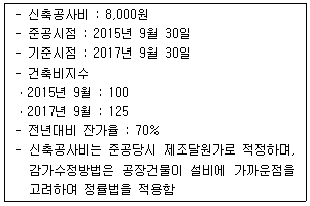
- 3,920만원
- 4,900만원
- 5,600만원
- 7,000만원
- 1억원
(정답률: 23%)
2과목: 민법 및 민사특별법
41. 법률행위 등에 관한 설명으로 틀린 것은? (다툼이 있으면 판례에 따름)
- 기성조건을 정지조건으로 한 법률행위는 무효이다.
- 의사표시가 발송된 후라도 도달하기 전에 표의자는 그 의사표시를 철회할 수 있다.
- 어떤 해악의 고지 없이 단순히 각서에 서명날인할 것만을 강력히 요구한 행위는 강박에 의한 의사표시의 강박행위가 아니다.
- 표의자가 과실 없이 상대방의 소재를 알지 못한 경우에는 민사소송법의 공시송달규정에 의하여 의사표시를 송달할 수 있다.
- 농지취득자격증명은 농지취득의 원인이 되는 매매계약의 효력발생요건이 아니다.
(정답률: 46%)
42. 무효와 취소에 관한 설명으로 틀린 것은? (다툼이 있으면 판례에 따름)
- 무효인 가등기를 유효한 등기로 전용하기로 약정하면 그 가등기는 소급하여 유효한 동기가 된다.
- 취소권은 추인할 수 있는 날로부터 3년 내에, 법률행위를 한 날로부터 10년 내에 행사하여야 한다.
- 무효인 법률행위를 사후에 적법하게 추인한 때에는 다른 정함이 없으면 새로운 법률행위를 한 것으로 보아야 한다.
- 무권리자가 甲의 권리를 자기의 이름으로 처분한 경우, 甲이 그 처분을 추인하면 처분행위의 효력이 甲에게 미친다.
- 무효행위의 추인은 그 무효원인이 소멸한 후에 하여야 그 효력이 있다.
(정답률: 34%)
43. 대리권 없는 乙이 甲을 대리하여 丙에게 甲소유의 토지를 매도하였다. 다음 설명 중 틀린 것은? (다툼이 있으면 판례에 따름)
- 乙이 甲을 단독상속한 경우, 乙은 본인의 지위에서 추인거절권을 행사할 수 없다.
- 乙과 계약을 체결한 丙은 甲의 추인의 상대방이 될 수 없다.
- 甲의 추인은 그 무권대리행위가 있음을 알고 이를 추인하여야 그 행위의 효과가 甲에게 귀속된다.
- 甲이 乙에게 추인한 경우에 丙이 乙의 대리행위에 대해 추인을 거절하더라도 丙은 乙에 계약의 이행이나 손해배상을 청구할 수 없다.
- 만약 乙이 미성년자라면, 甲이 乙에 대해 계약의 이향이나 손해배상을 청구할 수 없다.
(정답률: 39%)
44. 대리에 관한 설명으로 틀린 것은? (다툼이 있으면 판례에 따름)
- 대리행위가 강행법규에 위반하여 무효가 된 경우에는 표현대리가 적용되지 아니한다.
- 본인의 허락이 없는 자기계약이라도 본인이 추인하면 유효한 대리행위로 될 수 있다.
- 상대방 없는 단독행위의 무권대리는 본인이 추인 여부와 관계없이 확정적으로 유효하다.
- 대리인이 자기의 이익을 위한 배임적 의사표시를 하였고 상대방도 이를 안 경우, 본인은 그 대리인의 행위에 대하여 책임이 없다.
- 권한을 정하지 아니한 임의대리인은 본인의 미등기부동산에 관한 보존등기를 할 수 있다.
(정답률: 42%)
45. 다음 중 무효가 아닌 것은? (다툼이 있으면 판례에 따름)
- 상대방과 통정하여 허위로 체결한 매매계약
- 주택법의 전매행위제한을 위반하여 한 전매약정
- 관할관청의 허가 없이 한 학교법인의 기본재산 처분
- 도박채무를 변제하기 위하여 그 채권자와 체결한 토지 양도계약
- 공무원의 직무에 관하여 청탁하고 그 대가로 돈을 지급할 것을 내용으로 한 약정
(정답률: 41%)
46. 조건부 법률행위에 관한 설명으로 틀린 것은? (다툼이 있으면 판례에 따름)
- 상대방이 동의하면 채무면제에 조건을 붙일 수 있다.
- 정지조건부 법률행위는 조건이 불성취로 확정되면 무효로 된다.
- 조건을 붙이는 것이 허용되지 않는 법률행위에 조건을 붙인 경우, 다른 정함이 없으면 그 조건만 분리하여 무효로 할 수 있다.
- 당사자가 조건성취의 효력을 그 성취 전에 소급하게 할 의사를 표시한 때에는 그 의사에 의한다.
- 정지조건의 경우에는 권리를 취득한 자가 조건성취에 대한 증명책임을 부담한다.
(정답률: 43%)
47. 불공정한 법률행위(민법 제104조)에 관한 설명으로 틀린 것은? (다툼이 있으면 판례에 따름)
- 경매에는 적용되지 않는다.
- 무상계약에는 적용되지 않는다.
- 불공정한 법률행위에 무효행위 전환의 법리가 적용될 수 있다.
- 법률행위가 대리인에 의하여 행해진 경우, 궁박 상태는 대리인을 기준으로 판단하여야 한다.
- 매매계약이 불공정한 법률행위에 해당하는지는 계약체결 당시를 기준으로 판단하여야 한다.
(정답률: 49%)
48. 다음 중 서로 잘못 짝지어진 것은?
- 저당권의 설정 - 이전적 승계
- 소유권의 포기 - 상대방 없는 단독행위
- 청약자가 하는 승낙연착의통지 - 관념의 통지
- 무주물의 선점 - 원시취득
- 무권대리에서 추인 여부에 대한 확답의 최고 - 의사의 통지
(정답률: 47%)
49. 甲은 자신의 X부동산을 乙에게 매도하고 계약금과 중도금을 지급받았다. 그 후 丙이 甲의 배임행위에 적극 가담하여 甲과 X부동산에 대한 매매계약을 체결하고 자신의 명의로 소유권이전등기를 마쳤다. 다음 설명으로 틀린 것은? (다툼이 있으면 판례에 따름)
- 乙은 丙에게 소유권이전등기를 직접 청구할 수 없다.
- 乙은 丙에 대하여 불법행위를 이유로 손해배상을 청구 할 수 있다.
- 甲은 계약금 배액을 상환하고 乙과 체결한 매매계약을 해제할 수 없다.
- 丙명의의 동기는 甲이 추인하더라도 유효가 될 수 없다.
- 만약 선의의 丁이 X부동산을 丙으로부터 매수하여 이전등기를 받은 경우, 丁은 甲과 丙의 매매계약의 유효를 주장할 수 있다.
(정답률: 40%)
50. 착오에 관한 설명으로 틀린 것은? (다툼이 있으면 판례에 따름)
- 당사자가 착오를 이유로 의사표시를 취소하지 않기로 약정한 경우, 표의자는 의사표시를 취소할 수 없다.
- 건물과 그 부지를 현상대로 매수한 경우에 부지의 지분이 미미하게 부족하다면, 그 매매계약의 중요부분의 착오가 되지 아니한다.
- 부동산거래계약서에 서명ㆍ날인한다는 착각에 빠진 상태로 연대보증의 서면에 서명ㆍ날인한 경우에는 표시상의 착오에 해당한다.
- 상대방이 표의자의 착오를 알고 이용한 경우에도 의사표시에 중대한 과실이 있는 표의자는 착오에 의한 의사표시를 취소할 수 없다.
- 상대방에 의해 유발된 동기의 착오는 동기가 표시되지 않았더라도 중요부분의 착오가 될 수 있다.
(정답률: 39%)
51. 전세권에 관한 설명으로 옳은 것은? (다툼이 있으면 판례에 따름)
- 전세금은 반드시 현실적으로 수수되어야만 하므로 기존의 채권으로 전세금의 지급에 갈음할 수 없다.
- 건물전세권이 법정갱신된 경우, 전세권자는 이를 등기해야 그 목적물을 취득한 제3자에게 대항할 수 있다.
- 토지전세권의 존속기간을 약정하지 않은 경우, 각 당사자는 6개월이 경과해야 상대방에게 전세권의 소멸통고를 할 수 없다.
- 건물전세권자와 인지(隣地)소유자 사이에는 상린관계에 관한 규정이 준용되지 않는다.
- 존속기간의 만효로 전세권이 소멸하면, 전세권의 용익물권적 권능은 소멸한다.
(정답률: 41%)
52. 지역권에 관한 설명으로 틀린 것은? (다툼이 있으면 판례에 따름)
- 지상권자는 인접한 토지에 통행지역권을 시효취득할 수 없다.
- 승역지에 수개의용수지역권이 설정된 때에는 후순위의 지역권자는 선순위의 지역권자의 용수를 방해하지 못한다.
- 지역권은 요역지와 분리하여 양도하거나 다른 권리의 목적으로 하지 못한다.
- 요역지가 수인의 공유인 경우에 그 1인에 의한 지역권 소멸시효의 정지는 다른 공유자를 위하여 효력이 있다.
- 토지공유자의 1인은 지분에 관하여 그 토지를 위한 지역권을 소멸하게 하지 못한다.
(정답률: 36%)
53. 점유자와 회복자의 관계 등에 관한 설명으로 틀린 것은?
- 선의의 점유자는 점유물의 과실을 취득한다.
- 점유자가 점유물반환청구권을 행사하는 경우, 그 침탈된 날로부터 1년 내에 행사하여야 한다.
- 점유자가 필요비를 지출한 경우, 그 가액의 증가가 현존한 경우에 한하여 상환을 청구할 수 있다.
- 점유자가 점유의 방해를 받을 염려가 있는 때에는 그 방해의 예방 또는 손해배상의 담보를 청구할 수 있다.
- 점유물이 점유자의 책임 있는 사유로 멸실된 경우, 소유의 의사가 없는 점유자는 선의의 경우에도 손해의 전부를 배상해야 한다.
(정답률: 37%)
54. 점유권에 관한 설명으로 틀린 것은?
- 점유권에 기인한 소는 본권에 관한 이유로 재판할 수 있다.
- 점유자는 소유의 의사로 선의, 평온 및 공연하게 점유한 것으로 추정된다.
- 전후양시에 점유한 사실이 있는 때에는 그 점유는 계속 한 것으로 추정된다.
- 점유자가 점유물에 대하여 행사하는 권리는 적법하게 보유한 것으로 추정된다.
- 전세권, 임대차, 기타의 관계로 타인으로 하여금 물건을 점유하게 한 자는 간접으로 점유권이 있다.
(정답률: 40%)
55. 지상권에 관한 설명으로 틀린 것은? (다툼이 있으면 판례에 따름)
- 지상권설정계약 당시 건물 기타 공작물이 없더라도 지상권은 유효하게 성립될 수 있다.
- 지상권자는 토지소유자의 의사에 반하여도 자유롭게 타인에게 지상권을 양도할 수 있다.
- 지상의 공간은 상하의 범위를 정하여 공작물을 소우하기 위한 지상권의 목적으로 할 수 있다.
- 지상권이 저당권의 목적인 경우 지료연체를 이유로 한지상권소멸청구는 저당권자에게 통지하면 즉시 그 효력이 생긴다.
- 지상권의 소멸시 지상권설정자가 상당한 가액을 제공하여 공작물 등의 매수를 청구한 때에는 지상권자는 정당한 이유 없이 이를 거절하지 못한다.
(정답률: 42%)
56. 물권변동에 관한 설명으로 틀린 것은? (다툼이 있으면 판례에 따름)
- 상속에 의하여 피상속인의 점유권은 상속인에게 이전된다.
- 물권에 관한 등기가 원인 없이 말소된 경우에 그 물권의 효력에는 아무런 영향을 미치지 않는다.
- 신축건물의 보존등기를 건물 완성 전에 하였더라도 그 후 그 건물이 곧 완성된 이상 등기를 무효하고 볼 수 없다.
- 부동산 공유자 중 1인은 공유물에 관한 보존행위로서 그 공유물에 마쳐진 제3자 명의의 원인무효등기 전부의말소를 구할 수 없다.
- 부동산에 관하여 적법ㆍ유효한 등기를 하여 소유권을 취득한 사람이 부동산을 점유하는 경우, 사실상태를 권리관계로 높여 보호할 필요가 없다면 그 점유는 취득시효의 기초가 되는 점유라고 할 수 없다.
(정답률: 39%)
57. 甲은 3/5, 乙은 2/5의 지분으로 X토지를 공유하고 있다. 다음 설명 중 틀린 것은? (다툼이 있으면 판례에 따름)
- 甲이 乙과 협의 없이 X토지를 丙에게 임대한 경우, 乙은 丙에게 X토지의 인도를 청구할 수 없다.
- 甲이 乙과 협의 없이 X토지를 丙에게 임대한 경우, 丙은 乙의 지분에 상응하는 차임 상당액을 乙에게 부당이득으로 반환할 의무가 없다.
- 乙이 甲과 협의 없이 X토지를 丙에게 임대한 경우, 甲은 丙에게 X토지의 인도를 청구할 수 있다.
- 乙은 甲과의 협의 없이 X토지 면적의 2/5에 해당하는 특정 부분을 배타적으로 사용ㆍ수익할 수 있다.
- 甲이 X토지 전부를 乙의 동의 없이 매도하여 매수인 명의로 소유권이전등기를 마친 경우에, 甲의 지분 범위 내에서 등기는 유효하다.
(정답률: 31%)
58. 甲은 자신의 토지와 그 지상건물 중 건물만을 乙에게 매도하고 건물 철거 등의 약정 없이 건물의 소유권 이전등기를 해 주었다. 乙은 이 건물을 다시 丙에게 매도하고 소유권이전등기를 마쳐주었다. 다음 설명 중 틀린 것은? (다툼이 있으면 판례에 따름)
- 乙은 관습상의 법정지상권을 등기 없이 취득한다.
- 甲은 丙에게 토지의 사용에 대한 부당이득반환청구를 할 수 있다.
- 甲이 丁에게 토지를 양도한 경우, 乙은 丁에게는 관습상의 법정지상권을 주장할 수 없다.
- 甲의 丙에 대한 건물철거 및 토지인도청구는 신의설실의 원칙상 허용될 수 없다.
- 만약 丙이 경매에 의하여 건물의 소유권을 취득한 경우라면, 특별한 사정이 없는 한 丙은 등기 없이도 관습상의 법정지상권을 취득한다.
(정답률: 30%)
59. 부합에 관한 설명으로 옳은 것을 모두 고른 것은? (다툼이 있으면 판례에 따름)
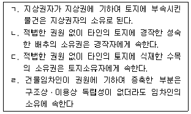
- ㄱ
- ㄴ, ㄹ
- ㄱ, ㄴ, ㄷ
- ㄴ, ㄷ, ㄹ
- ㄱ, ㄴ, ㄷ, ㄹ
(정답률: 39%)
60. 저당권에 관한 설명으로 틀린 것은?
- 지상권은 저당권의 객체가 될 수 있다.
- 저당권은 그 담보한 채권과 분리하여 타인에게 양도할 수 있다.
- 저당권으로 담보한 채권이 시효완성으로 소멸하면 저당권도 소멸한다.
- 저당권의 효력은 특별한 사정이 없는 한 저당부동산의 종물에도 미친다.
- 저당물의 제 2취득자가 그 부동산에 유익비를 지출한 경우, 저당물의 경매대가에서 우선상환을 받을 수 있다.
(정답률: 40%)
61. 상린관계에 관한 설명으로 틀린 것은? (다툼이 있으면 판례에 따름)
- 인접지의 수목뿌리가 경계를 넘은 때에는 임의로 제거할 수 있다.
- 주위토지통행권자는 통행에 필요한 통로를 개설할 경우 그 통로개설이나 유지비용을 부담해야 한다.
- 통행지 소유자가 주위토지통행권에 기한 통행에 방해가 되는 담장을 설치한 경우, 통행지 소유자가 그 철거의무를 부담한다.
- 경계에 설치된 담이 상린자의 공유인 경우, 상린자는 공유를 이유로 공유물분할을 청구하지 못한다.
- 경계선 부근의 건축시 경계로부터 반미터 이상의 거리를 두어야 하는데 이를 위반한 경우, 건물이 환성된 후에도 건물의 철거를 청구할 수 있다.
(정답률: 42%)
62. 유치권의 소멸사유가 아닌 것은?
- 포기
- 점유의 상실
- 목적물의 전부멸실
- 피담보채권의 소멸
- 소유자의 목적물 양도
(정답률: 45%)
63. 후순위 근저당권자의 신청으로 담보권실행을 위한 경매가 이루어진 경우, 확정되지 않은 선순위 근저당권의 피담보채권이 확정되는 시기는? (다툼이 있으면 판례에 따름)
- 경매개시결정이 있는 때
- 매수인이 매각대금을 완납한 때
- 경매법원의 매각허가결정이 있는 때
- 후순위 근저당권자가 경매를 신청한 때
- 선순위 근저당권자가 경매개시된 사실을 알게 된 때
(정답률: 40%)
64. 甲은 乙과의 계약에 따라 乙소유의 구분건물 201호, 202호 전체를 수리하는 공자를 완료하였지만, 乙이 공사대금을 지급하지 않자 甲이 201호만을 점유하고 있다. 다름 설명 중 옳은 것은? (다툼이 있으면 판례에 따름)
- 甲의 유치권은 乙소유의 구분건물 201호, 202호 전체의 공사대금을 피담채권으로 하여 성립한다.
- 甲은 乙소유의 구분건물 201호, 202호 전체에 대해 유치권에 의한 경매를 신청할 수 있다.
- 甲은 201호에 대한 경매절차에서 매각대금으로부터 우선변제를 받을 수 있다.
- 甲이 乙의 승낙 없이 201호를 丙에게 임대한 경우, 乙은 유치권의 소멸을 청구할 수 없다.
- 甲이 乙의 승낙 없이 201호를 丙에게 임대한 경우, 丙은 乙에 대해 임대차의 효력을 주장 할 수 있다.
(정답률: 34%)
65. 계약의 성립에 관한 설명으로 틀린 것은? (다툼이 있으면 판례에 따름)
- 청약은 그에 대한 승낙만 있으면 계약이 성립하는 구체적ㆍ확정적 의사표시이어야 한다.
- 아파트 분양광고는 청약의 유인의 성질을 갖는 것이 일반적이다.
- 당사자간에 동일한 내용의 청약이 상호교차된 경우, 양청약이 상대방에게 발송한 때에 계약이 성립한다.
- 승낙자가 청약에 대하여 조건을 붙여 승낙한 때에는 그 청약의 거절과 동시에 새로 청약한 것으로 본다.
- 청약자가 미리 정한 기간 내에 이외를 하지 아니하면 승낙한 것으로 본다는 뜻을 청약시 표시하였더라도 이는 특별한 사정이 없는 한 상대방을 구속하지 않는다.
(정답률: 40%)
66. 甲은 자신의 X건물을 乙에게 임대하였고, 乙은 甲의 동의 없이 X건물에 대한 임차권을 丙에게 양도하였다. 다음 설명 중 틀린 것은? (다툼이 있으면 판례에 따름)
- 乙은 丙에게 甲의 동의를 받아 줄 의무가 있다.
- 乙과 丙사이의 임차권 양도계약은 유동적 무효이다.
- 甲은 乙에게 차임의 지급을 청구할 수 있다.
- 만약 丙이 乙의 배우자이고, X건물에서 동거하면서 함께 가구점을 경영하고 있다면, 甲은 임대차계약을 해지 할 수 없다.
- 만약 乙이 甲의 동의를 받아 임차권을 丙에게 양도하였다면, 이미 발생된 乙의 연체차임채무는 특약이 없는 한 丙에게 이전되지 않는다.
(정답률: 38%)
67. 제3자를 위한 계약에 관한 설명으로 틀린 것은? (다툼이 있으면 판례에 따름)
- 수익자는 계약의 해제권이나 해제를 원인으로 한 원상회복청구권이 없다.
- 수익의 의사표시를 한 수익자는 낙약자에게 직접 그 이행을 청구할 수 있다.
- 낙약자는 요약자와의 계약에서 발생한 항변으로 수익자에게 대항할 수 없다.
- 채무자와 인수인의 계약으로 체결되는 병존적 채무인수는 제3자를 위한 계약으로 볼 수 있다.
- 계약당사자가 제3자에 대하여 가진 채권에 관하여 그 채무를 면제하는 계약도 제3자를 위한 계약에 준하는 것으로서 유효하다.
(정답률: 34%)
68. 부동산매매계약이 수량지정매매인데, 그 부동산의 실제면적이 계약면적에 미치지 못한 경우에 관한 설명으로 틀린 것은? (다툼이 있으면 판례에 따름)
- 선의의 매수인은 대금감액을 청구할 수 없다.
- 악의의 매수인은 손해배상을 청구할 수 없다.
- 담보책임에 대한 권리행사기간은 매수인이 그 사실을 안 날로부터 1년 이내이다.
- 미달부분의 원시적 불능을 이유로 계약체결상의 과실책임에 따른 책임의 이행을 구할 수 없다.
- 잔존한 부분만이면 매수인이 이를 매수하지 않았을 경우, 선의의 매수인은 계약 전부를 헤제할 수 있다.
(정답률: 38%)
69. 하자담보책임에 관한 설명으로 틀린 것은? (다툼이 있으면 판례에 따름)
- 건축의 목적으로 매수한 토지에 대해 법적 제한으로 건축허가를 받을 수 없어 건축이 불가능한 경우, 이는 매매목적물의 하자에 해당한다.
- 하자담보책임으로 발생하는 매수인의 계약해제권 행사기간은 제척기간이다.
- 하자담보책임에 기한 매수인의 손해배상청구권도 소멸시효의 대상이 될 수 있다.
- 매도인이 매매목적물에 하자가 있다는 사실을 알면서 이를 매수인에게 고지하지 않고 담보책임 면제의 특약을 맺은 경우 그 책임을 면할 수 없다.
- 매도인의 담보책임은 무과실책임이므로 하자의 발생 및 그 확대에 가공한 매수인의 잘못을 참작하여 손해배상 범위를 정할 수 없다.
(정답률: 33%)
70. 계약의 유형에 관한 설명으로 옳은 것은?
- 부동산매매계약은 유상, 요물계약이다.
- 중계계약은 민법상의 전형계약이다.
- 부동산교환계약은 무상, 계속적 계약이다.
- 증여계약은 편무, 유상계약이다.
- 임대차계약은 쌍무, 유상계약이다.
(정답률: 41%)
71. 甲은 자신의 X건물을 乙소유 Y토지와 서로 교환하기로 합의하면서 가액차이로 발생한 보충금의 지급에 갈음하여 Y토지에 설정된 저당권의 피담보채무를 이행인수하기로 약정하였다. 다음 설명 중 옳은 것은? (다툼이 있으면 판례에 따름)
- 교환계약체결 후 甲의 귀책사유 없이 X건물이 멸실되더라도 위험부담의 법리는 적용되지 않는다.
- 甲이 보충금을 제외한 X건물의 소유권을 乙에게 이전하면 특별한 사정이 없는 한 계약상의 의무를 한 것이 된다.
- 甲과 乙은 특약이 없는 한 목적물의 하자에 대하여 상대방에게 담보책임을 부담하지 않는다.
- 甲이 피담보채무의 변제를 게을리하여 저당권이 실행될 염려가 있어 乙이 그 피담보채무를 변제하였더라도 乙은 교환계약을 해제할 수 없다.
- 乙이 시가보다 조금 높게 Y토지의 가액을 고지해서 甲이 보충금을 지급하기로 약정했다면, 甲은 乙에게 불법행위에 기한 손해배상청구가 가능하다.
(정답률: 29%)
72. 계약금에 관한 설명으로 틀린 것은? (다툼이 있으면 판례에 따름)
- 계약금 포기에 의한 계약해제의 경우, 상대방은 채무불이행을 이류로 손해배상을 청구할 수 없다.
- 계약금계약은 계약에 부수하여 행해지는 종된 계약이다.
- 계약금을 위약금으로 하는 당사자와 특약이 있으면 계약금은 위약금의 성질이 있다.
- 계약금을 포기하고 행사할 수 있는 해제권은 당사자의 합의로 배제할 수 있다.
- 매매계약시 계약금의 일부만을 먼저 지급하고 잔액은 나중에 지급하기로 한 경우, 매도인은 실제 받은 일부금액의 배액을 상환하고 매매계약을 해제할 수 있다.
(정답률: 40%)
73. 이행지체로 인한 계약의 해제에 관한 설명으로 틀린 것은? (다툼이 있으면 판례에 따름)
- 이행의 최고는 반드시 미리 일정기간을 명시하여 최고하여야 하는 것은 아니다.
- 계약의 해제는 손해배상의 청구에 영향을 미치지 않는다.
- 당사자 일방이 정기행위를 일정한 시기에 이행하지 않으면 상대방은 이행의 최고 없이 계약을 해제할 수 있다.
- 당사자의 쌍방이 수위인 경우, 계약의 해제는 그 1인에 대하여 하더라도 효력이 있다.
- 쌍무계약에서 당사자의 일방이 이행을 제공하더라도 상대방이 채무를 이행할 수 없음이 명백한지의 여부는 계약해제시를 기준으로 판단하여야 한다.
(정답률: 32%)
74. 매매의 일방예약에 관한 설명으로 옳은 것은? (다툼이 있으면 판례에 따름)
- 매매의 일방예약은 물권계약이다.
- 매매의 일방예약은 상대방이 매매를 완결할 의사를 표시하는 때에 매매의 효력이 생긴다.
- 예약완결권을 행사기간 내에 행사하였는지에 관해 당사자의 주장이 없다면 법원은 이를 고려할 수 없다.
- 매매예약이 성립한 이후 상대방의 예약완결권 행사 전에 목적물이 전부 멸실되어 이행불능이 된 경우에도 예약완결권을 행사할 수 있다.
- 예약완결권은 당사자 사이에 그 행사시간을 약정하지 않은 경우에 그 예약이 성립한 날로부터 5년 내에 이를 행사하여야 한다.
(정답률: 35%)
75. 甲이 2017.2.10. 乙소유의 X상가건물을 乙로부터 보증금 6억원에 임차하여 상가건물임대차보호법상의 대항요건을 갖추고 영업하고 있다. 다음 설명 중 틀린 것은?(관련 규정 개정전 문제로 여기서는 기존 정답인 5번을 누르면 정답 처리됩니다. 자세한 내용은 해설을 참고하세요.)
- 甲의 계약갱신요구권은 최초의 임대차기간을 포함한 전체 임대차기간이 5년을 초과하지 아니하는 범위에서만 행사할 수 있다.
- 甲과 乙사이에 임대차기간을 6개월로 정한 경우, 乙은 그 기간이 유효함을 주장할 수 있다.
- 甲의 계약갱신요구권에 따라 갱신되는 임대차는 전 임대차와 동일한 조건으로 다시 계약된 것으로 본다.
- 임대차종료 후 보증금이 반환되지 않은 경우, 甲은 X건물의 소재지 관할법원에 임차권등기명령을 신청할 수 없다.
- X건물이 경매로 매각된 경우, 甲은 특별한 사정이 없는 한 보증금에 대해 일반채권자보다 우선하여 변제받을 수 있다.
(정답률: 31%)
76. 甲은 乙의 저당권이 설정되어 있는 丙소유의 X주택을 丙으로부터 보증금 2억원에 임차하여 즉시 대항요건을 갖추고 확정일자를 받아 거주하고 있다. 그 후 丁이 X주택에 저당권을 취득한 다음 저당권실행을 위한 경매에서 戊가 X주택의 소유권을 취득하였다. 다음 설명 중 옳은 것은? (다툼이 있을면 판례에 따름)
- 乙의 저당권은 소멸한다.
- 戊가 임대인 丙의 지위를 승계한다.
- 甲이 적법한 배당요구를 하면 乙보다 보증금 2억원에 대해 우선변제를 받는다.
- 甲은 戊로부터 보증금을 전부 받을 때까지 임대차관계의 존속을 주장할 수 있다.
- 丁이 甲보다 매각대금으로부터 우선변제를 받는다.
(정답률: 33%)
77. 甲은 조세포탈ㆍ강제집행의 면탈 또는 법령상 제한의 회피를 목적으로 하지 않고, 배우자 乙과의 명의신탁약정에 따라 자신의 X토지를 乙명의로 소유권이전등기를 마쳐주었다. 다음 설명 중 틀린 것은? (다툼이 있으면 판례에 따름)
- 乙은 甲에 대해 X토지의 소유권을 주장할 수 없다.
- 甲이 X토지를 丙에게 매도한 경우, 이를 타인의 권리매매라고 할 수 없다.
- 丁이 X토지를 불법점유하는 경우, 甲은 직접 丁에 대해 소유물반환청구권을 행사할 수 있다.
- 乙로부터 X토지를 매수한 丙이 乙의 甲에 대한 배신행위에 적극가담한 경우, 乙과 丙사이의 계약은 무효이다.
- 丙이 乙과의 매매계약에 따라 X토지에 대한 소유권이전등기를 마친 경우, 특별한 사정이 없는 한 丙이 X토지의 소유권을 취득한다.
(정답률: 32%)
78. 甲은 乙에게 빌려준 1,000만원을 담보하기 위해 乙소유의 X토지(시가 1억원)에 가등기를 마친 다음, 丙이 X토지에 대해 저당권을 취득하였다. 다음 설명 중 옳은 것은? (다툼이 있으면 판례에 따름)
- 乙의 채무변제의무화 甲의 가등기말소의무는 동시이행의 관계에 있다.
- 甲이 청산기간이 지나기 전에 가등기에 의한 본등기를 마치면 그 본등기는 무효이다.
- 乙이 청산기간이 지나기 전에 한 청산금에 과한 권리의 양도는 이로써 丙에게 대할 할 수 있다.
- 丙은 청산기간이 지나면 그의 피담보채권 변제기가 도래하기 전이라도 X토지의 경매를 청구할 수 있다.
- 甲의 가등기담보권 실행을 위한 경매절차에서 X토지의 소유권을 丁이 취득한 경우, 甲의 가등기담보권은 소멸하지 않는다.
(정답률: 26%)
79. 집합건물의 소유 및 관리에 관한 법률상 구분소유자의 5분의 4이상 및 의결권의 5분의 4이상의 결의가 있어야만 하는 경우는?
- 재건축 결의
- 공용부분의 변경
- 구분소유권의 경매청구
- 규약의 설정ㆍ변경 및 폐지
- 구분소유자의 전유부분 사용금지의 청구
(정답률: 43%)
80. 선순위 담보권 등이 없는 주택에 대해 대항요건과 확정일자를 갖춘 임대차에 관한 설명으로 틀린 것은? (다툼이 있으면 판례에 따름)
- 임차권은 상속인에게 상속될 수 있다.
- 임차인의 우선변제권은 대지의 환가대금에도 미친다.
- 임대차가 묵시적으로 갱신된 경우, 그 존속기간은 2년으로 본다.
- 임차인이 경매절차에서 해당 주택의 소유권을 취득한 경우, 임대인에 대하여 보증금반환을 청구할 수 있다.
- 임차인의 보증금반환채권이 가압류된 상태에서 그 주택이 양도된 경우, 가압류채권자는 양수인에 대하여만 가압류의 효력을 주장할 수 있다.
(정답률: 30%)
빈지(濱地)는 물에 의한 침식으로 인해 수면 아래로 잠기거나 하천으로 변한 토지를 말한다.